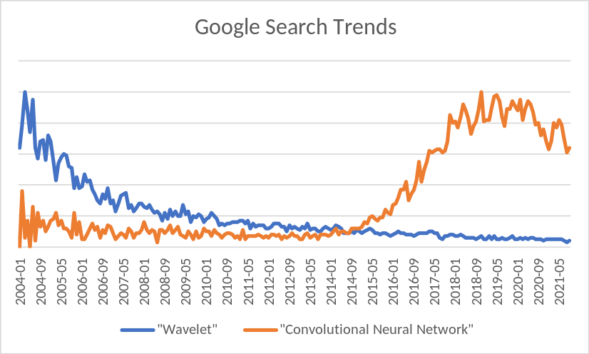
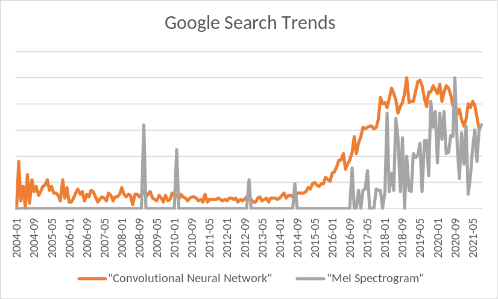
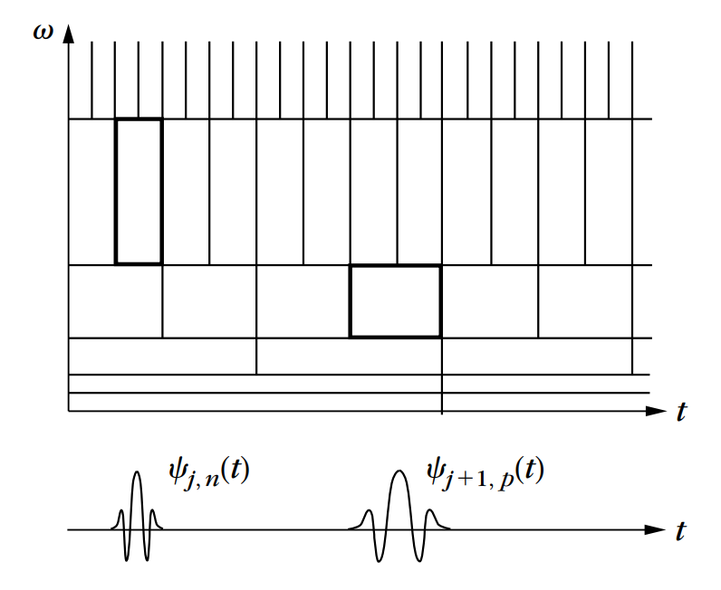

Notebook to PDF (as a document)¶
jupyter-nbconvert report.ipynb --to pdf -TagRemovePreprocessor.remove_cell_tags='{"remove_cell"}' --template template.tplx
Notebook to slide deck¶
jupyter-nbconvert report.ipynb --to slides --TagRemovePreprocessor.remove_input_tags={\"remove-input\"} --post serve --ServePostProcessor.port=9997 --ServePostProcessor.ip="0.0.0.0"
http://72.179.3.141:9997/nov8.slides.html
To convert to pdf, add ?print-pdf to URL, i.e.
http://72.179.3.141:9997/nov8.slides.html?print-pdf
GPU Filter Banks for Audio¶
Abstract¶
In our project, we implement a class of perfect-reconstruction filterbanks for audio analysis. We exploit parallelism across CPU threads for part of our algorithm and use a GPU to solve embarassingly parallel subtasks. We also introduce a novel type of time-frequency tiling which retains the benefits of constant-Q transforms without requiring their cumbersome data structure.
Background¶
For audio signal processing problems such as compression, denoising, and various types of pattern recognition, deep learning has taken over. For example, the search interest for “wavelet” has followed the opposite trajectory as “convolutional neural network”

A current trend of audio signal processing research is to apply 2D convolutional neural networks to time-frequency representations of audio. Although great progress was made in the pre-deep learning era on perfect reconstruction filterbanks and wavelet transforms, most of the algorithms and techniques have been abandoned by practitioners of deep learning because no standardized and free implementations were ever widely disseminated. As a result, the standarized set of triangular “Mel” filterbanks dating back nearly 50 years appears to have remained the dominant tool, and have even seen a resurgance despite their impending obsolescence.

The use of these methods is accumulating a considerable debt. Compared to the most recent iterations of constant-Q filterbanks, these methods for time-frequency analysis lack several desirable properties
Parameterization/tunability
Perfect reconstruction
Meaningful/interpretable phase representation
Generalization to multiple channels/phased arrays
Efficient implementation for oversampled representations.
Filter Banks and Wavelet Transforms¶
Filter banks are the oldest method of time-frequency analysis, dating back to the first analog spectrum analyzer built by Hermann von Helmholtz in the 19th century.

In 1909, mathematician Alfréd Haar discovered that a list of \(2^n\) numbers can be represented by recursively taking the sum and difference of adjacent pairs. This property is now commonly referred to ‘alias cancellation’
In the 1970s, engineers created the first discrete, invertible filterbanks by expoiting this property. Using what are known as ‘conjugate mirror filters’. In the following decade, a massive research effort took place, resulting in a rigorous mathematical understanding of these processes and the development of various “wavelet transforms.”
Unfortunately, deep learning has begun to displace these techniques in education, leading to considerable confusion and technical debt.
using DSP
Haar Decomposition¶
x = round.(Int,10*randn(8));
print(x)
[7, 1, -13, 20, 4, 7, -18, 5]
s = conv(x,[1, 1])[2:2:end];
d = conv(x,[1,-1])[2:2:end];
println("s = ",s); print("d = ",d)
s = [8, 7, 11, -13]
d = [-6, 33, 3, 23]
y1 = (s-d)/2;
y2 = (s+d)/2;
println(Int.(y1)); print(Int.(y2))
[7, -13, 4, -18]
[1, 20, 7, 5]
This is an example of a critically sampled dyadic filterbank
Time-frequency tiling¶
Decomposing the lower branch produces octave filters
img/dyadic_analysis_filterbank.svg

Decomposing both branches (balanced tree)
(uniform grid of rectangles)
you can have anything in the middle
DWT Sequential time complexity¶
each level is N log N
log N levels
between N log N and N (log N)^2
regardless of how many levels you go down
parallel fft complexity (and therefore convolution)¶
log N levels
each level n/p computation
(N/p) log N
parallel DWT is
(N/p) (log N)^2
Input size¶
Speech: few seconds long, fs = 16000, N ~ 10^5 per record.
Music: minutes long, two channels, fs = 48000, N ~ 10^7 per record.
Passive sonar array: 100s of channels, fs in the kHz, ~ 10^10 per hour.
Data pipeline¶
Speech and music are nearly always compressed. Typical compression ratio is 10:1
Phased array data often minimally compressed and stored on cheap magnetic tape.
Often helpful to combine PRAM and GPU computation models.
Multiple CPUs can increase the rate at which data is decoded and communicated to the GPU(s)
Generalization to other filters¶
You need alias cancellation
https://en.wikipedia.org/wiki/Quadrature_mirror_filter
As long as you satisfy this condition, you can use better filters
Discrete wavelet transform¶
Generalizes this idea
Goal¶
Generalize these types of transformations to
Filters with greater frequency selectivity
Oversampled filters
Undersampled filters
GPU convolution¶
what is CUDA doing?
https://docs.nvidia.com/deeplearning/cudnn/developer-guide/index.html
If you repeat your data and construct
https://en.wikipedia.org/wiki/Toeplitz_matrix
Then convolution is equivalent to matrix multiply
Not actually doing matrix multiplication, but create a mapping from “virtual matrix” to corresponding array location
(fold in some of the theory from lecture on mat mul)
Parallel FFT algorithms¶
Decimation filterbank¶
filter then downsample
!= dilation + stride (but close)
show toeplitz matrix multiplication with upsampling/downsampling
Polyphase filterbank¶
upsample then filter
?= transposed convolution with dilation and stride
Another oppurtunity to add CPU parallelism
show mathematically that it’s equivalent to splitting filter into L pieces where L is the upsampling factor, and applying filters in parallel
Oversampled filterbanks¶
You get exploit more CPU parallelism
Undersampled filterbanks¶
Demo our program¶
Analysis filterbank¶
Processing¶
denoising
compression
source separation